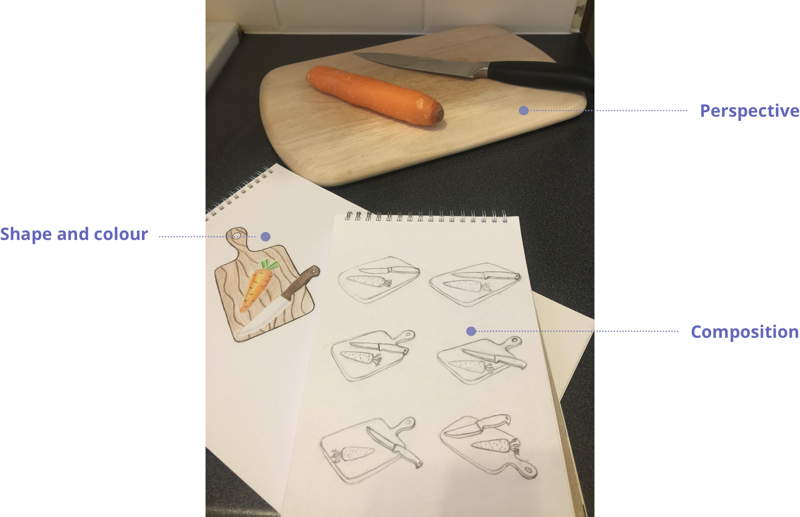

To ensure illustrations had the same style, I wanted them to have the same:
- coloursheme;
- perspective;
- split into colour blocks;
- highlights.
Cutting board
First, I decided on the shape and colour of the elements on the board. I then took several
photographs of the items to see how they would look in perspective and what composition would
work best for placing those items on the board. This was followed by sketching to determine,
how the perspective would work best with the shape of the board.
Study

Architecture
Casserole
In the interview 3 out 5 people preferred casserole for the “Experiment”. The caasserole
on fire with bubbles looks entertaining and vibrant, so I took the sample 2D outline icon
and converted it into a colourful casserole with perspective. To narrow down the shape and
colours I did a small study in actylics and ended up picking one of the samples.
Study
Architecture
Cupcakes
The cupcakes stand for “Competitors”, for difference. The idea was to come up with 3 different cupcakes.
The challenge
- my chosen colourscheme
- shape of the bottom simplified but realistic
- colour contrast between top and bottom
- contrast between cream and base
- wavy creamy top
- top same width and height as bottom
- decoration on top to make it taller
Study
Painting and sketching cupcakes from photos helped me to familiarise myself with their features.
Architecture
The message behind the order of the cupcakes